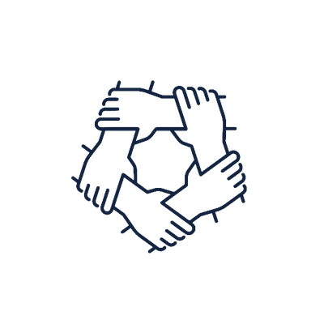

Sostenibilidad
Modelos de gestión que permiten que la intervención en un sitio siga viva cuando el proyecto termina.

Estudio, protección y promoción del patrimonio arqueológico e histórico de América precolombina, desde una cosmovisión andina y de hemisferio SUR
Quiénes somos
Promovemos el estudio, protección y promoción del patrimonio arqueológico e histórico de América precolombina, mediante una cosmovisión andina y de hemisferio SUR.
Conocer más sobre el instituto
Valores institucionales
Modelos de gestión que permiten que la intervención en un sitio siga viva cuando el proyecto termina.

2El trabajo se construye con las comunidades del territorio, no sobre ellas.
El patrimonio recuperado vuelve a la sociedad en forma de conocimiento, formación y oportunidad.

Proyectos en curso

Prospección e intervención de sitios arqueológicos vulnerables.

Proyecto editorial, artículos indexados y congresos internacionales.

Rutas patrimoniales binacionales y formación de actores locales.

Autogestión & donativos
La obra científico literaria sobre el esplendor civilizatorio en el hemisferio sur del planeta. Su aporte sostiene la intervención de los sitios arqueológicos del programa.